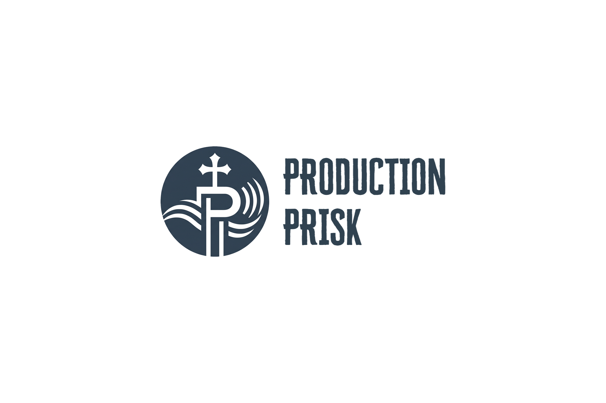

Templates
Clean layouts for slides, lower thirds, announcements, and recurring service graphics.

Church Production Resources
Download original templates, themes, and production assets built to help your team work faster and stay consistent.
What This Is
Clean layouts for slides, lower thirds, announcements, and recurring service graphics.
Consistent visual systems for ProPresenter that help your team keep every presentation on brand.
Free tools and useful downloads that are safe to share because they do not include copyrighted lyrics.
Downloads
Basic church production layouts for quick reuse in ProPresenter.
DownloadA clean branded theme set based on the Production Prisk look and feel.
DownloadA simple guide explaining how to import and use each download.
DownloadDownloadable public domain hymn files for church production use.
DownloadStay Updated
Use this page as your central hub for free materials, templates, and future uploads.